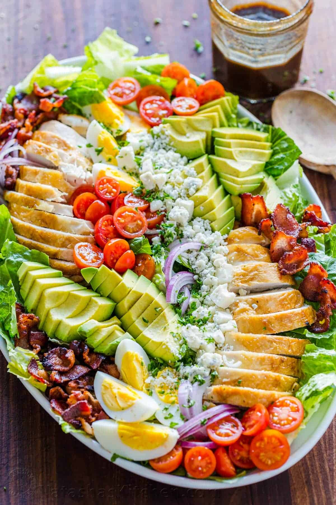
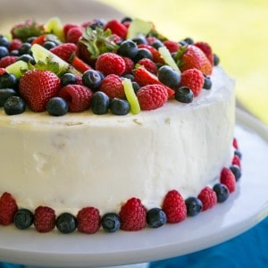
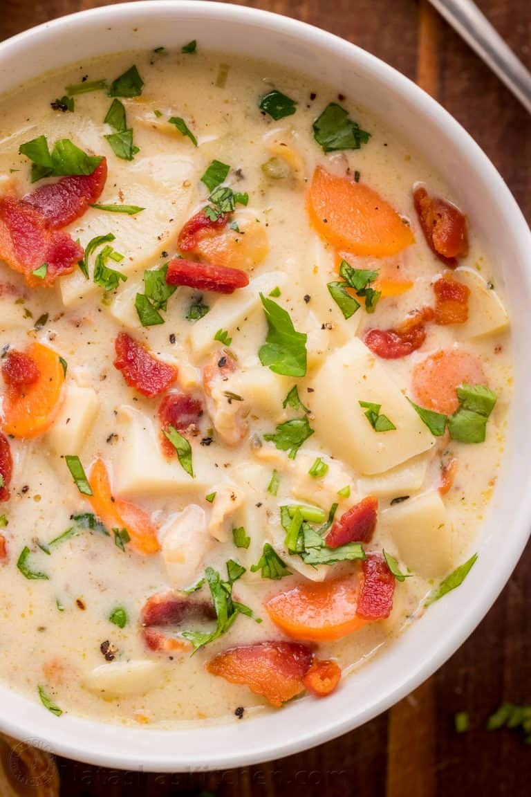

Salads

Cobb salad receipe
Easy Chicken Cobb Salad with the Best Homemade Cobb Salad Dressing! This protein-packed salad is a meal in itself loaded with crisp lettuce, juicy tomatoes, chicken, bacon, boiled eggs, creamy avocado and crumbled blue cheese.
- Sautee chopped bacon on a skillet until browned and crisp (5 min), then transfer to a paper-towel-lined plate to cool. Cook 2 hard-boiled eggs then peel and quarter.
- Chop, rinse and spin dry romaine lettuce and arrange on a platter. Arrange remaining salad ingredients (chicken, eggs, avocado, tomatoes, onion, blue cheese, and bacon) in rows over salad then sprinkle the finely chopped parsley over the salad.
- Transfer dressing ingredients to a mason jar and shake like crazy. Drizzle over salad just before serving or let guests add their own dressing to taste.
Dessert

Kiwi Berry Cake
This is the most stunning kiwi berry tiramisu you'll make because it's an actual cake. It's surprisingly simple to make and doesn't require a crazy long list of ingredients.
- Bake the easy 4-ingredient sponge cake. Once cakes are at room temp, use a serrated knife to cut in half for a total of 4 layers.
- In a small bowl, combine 1/2 package raspberries, 1/4 cup water, 4 Tbsp orange liqueur, and 2 Tbsp sugar. Mash together with a fork and set aside.
- Just before assembling your cake, make the cream: In a large bowl, use a spatula to fold together 16 oz mascarpone cheese and 2 Tbsp orange liqueur until well incorporated.
- In a second large mixing bowl, beat with a mixer 1 1/2 cups heavy cream, 1/3 cup sugar and 1 tsp vanilla just until fluffy with soft peaks.** Use a spatula to fold half of the whipped cream into mascarpone to lighten it then fold in remaining cream and blend until fully incorporated.
Soup

Clam Chowder Soup Recipe
Creamy soups are such a treat. I fell in love with them on our honeymoon in Mexico where we enjoyed 5-star dining for the first time in our lives. It’s so fun to recreate restaurant-quality dishes at home like this Zuppa Toscana Recipe, our Chicken Wild Rice Soup, and definitely Chicken Tortilla Soup.
- Heat a large pot or dutch oven over med/high heat and add the chopped bacon. Sauté, stirring occasionally until browned and crisp then transfer to paper towel lined plate.
- Add prepared carrots, onion and celery and continue cooking over med/nigh heat, stirring occasionally until soft and golden (7-8 min). Sprinkle in 4 Tbsp flour, and saute another minute, stirring constantly.
- Add 2 cups chicken broth, 1 cup chopped clams with their juice,1 bay leaf, 1 1/2 tsp Worcestershire, 1/2 tsp Tabasco sauce, 1/2 tsp dried thyme, 1 1/2 tsp salt and 1/4 tsp black pepper. Bring soup to a light boil.
- While soup is heating up, chop potatoes into bite-sized pieces about 1/4″ thick. Add potatoes to pot then stir in 2 cups milk and 1 cup whipping cream. Bring to a boil, reduce heat, cover and lightly boil until potatoes are easily pierced with a fork.